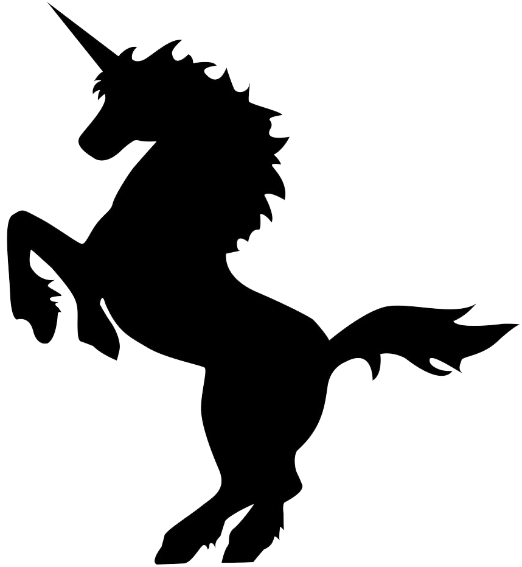

The Unicorn Song
by The Irish Rovers

[verse 1]
A long time ago, when the Earth was green
There was more kinds of animals than you've ever seen
They'd run around free while the Earth was being born
But the loveliest of them all was the unicorn
There was green alligators and long-necked geese
Some humpty backed camels and some chimpanzees
Some cats and rats and elephants, but sure as you're born
The loveliest of all was the unicorn
[verse 2]
But God seen some sinning and it gave Him pain
And He says, "Stand back, I'm going to make it rain"
He says, Hey Brother Noah, I'll tell you what to do
Build me a floating zoo,
and take some of them...
Green alligators and long-necked geese
Some humpty backed camels and some chimpanzees
Some cats and rats and elephants, but sure as you're born
Don't you forget My unicorns
[verse 3]
Old Noah was there to answer the call
He finished up making the ark just as the rain started falling
He marched in the animals in two by two
And he called out as they went through
Hey Lord,
I've got green alligators and long-necked geese
Some humpty backed camels and some chimpanzees
Some cats and rats and elephants, but Lord, I'm so forlorn
I just can't see no unicorns
[verse 4]
And Noah looked out through the driving rain
Them unicorns were hiding, playing silly games
Kicking and splashing while the rain was falling
Oh, them silly unicorns
There was green alligators and long-necked geese
Some humpty backed camels and some chimpanzees
Noah cried, Close the door because the rain is falling
And we just can't wait for no unicorns
[verse 5]
The ark started moving, it drifted with the tide
The unicorns looked up from the rocks and they cried
And the waters came down and sort of floated them away
And that's why you never seen a unicorn to this very day
You'll see green alligators and long-necked geese
Some humpty backed camels and some chimpanzees
Some cats and rats and elephants, but sure as you're born
You're never gonna see no unicorns